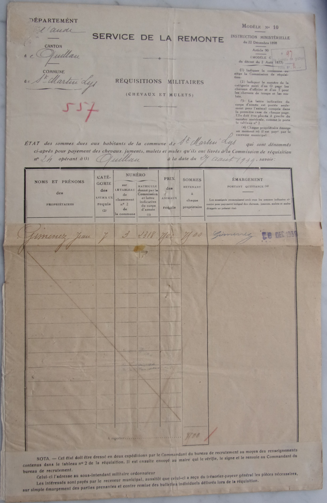
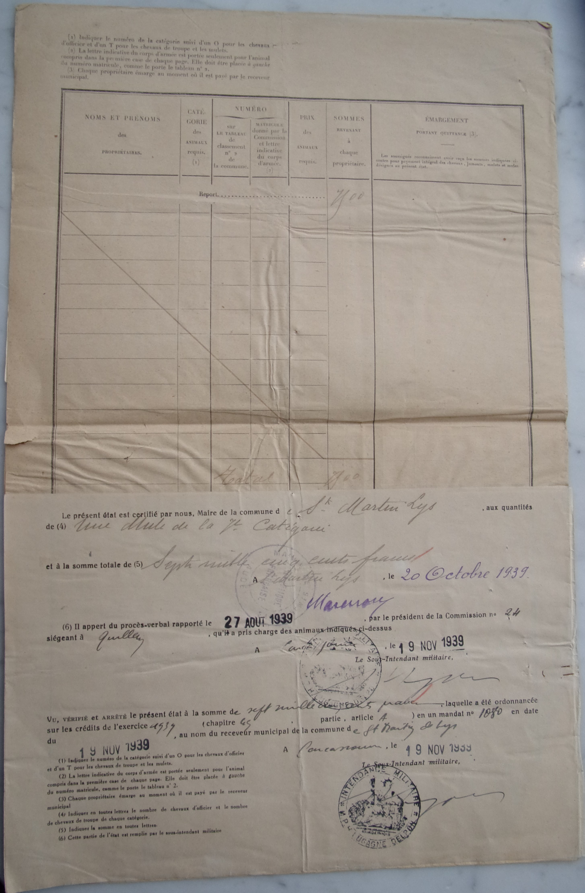
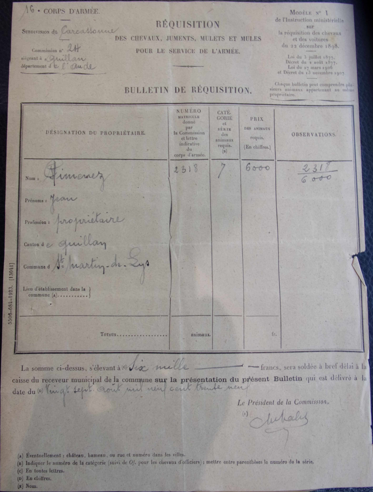
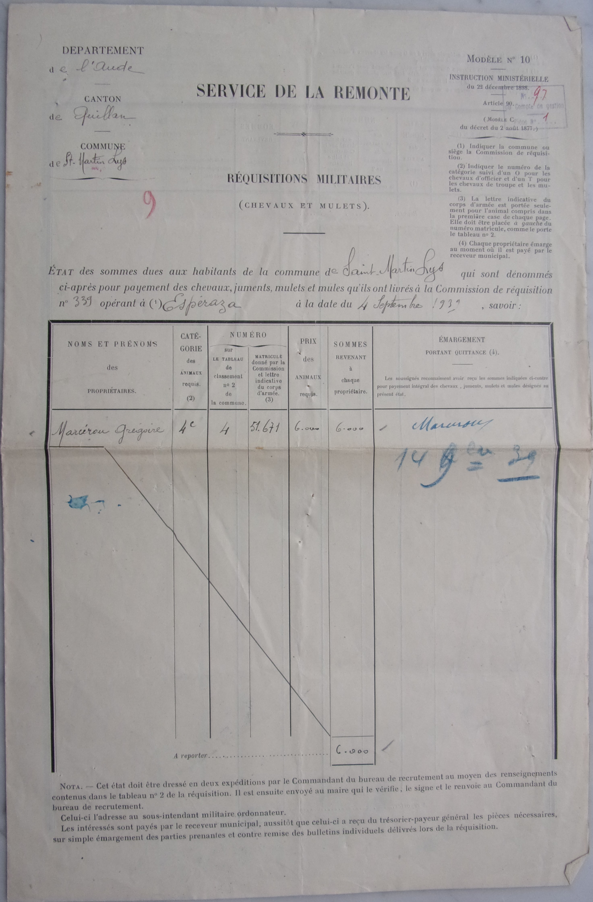
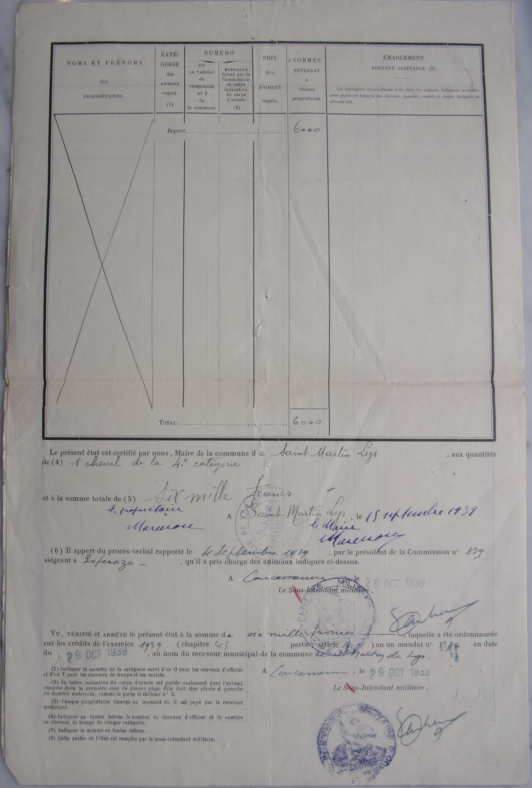

Saint Martin Lys
Réquisitions de 1939
Documents des archives départementales
Service de remonte - réquisitions militaires - Chevaux et mulets
27 août 1939 - Sommes dues à Jean Gimenez



04 septembre 1939 - Sommes dues à Grégoire Marcérou


Commentaires
Cliquer ici pour faire un Commentaire
Retour à l'accueil Index complement 3